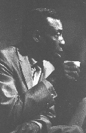
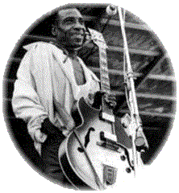

He was the first electric guitar player I
heard on record,
he made me so that I just had to go out and get an electric guitar...
That was the best sound I ever heard.
- B.B. King

Аарон Тибо Уолкер (Aaron Thibeaux Walker) родился 28 мая 1910 года в городе Линден, штат Техас. Когда ему было два года, его семья переехала в Даллас. Его отчим, Marco Washington, научил его петь, но настоящий урок блюза он получил от Блайнд Лемона Джефферсона (Blind Lemon Jefferson), основателя техаского блюза. Совершенно очевидно, что именно это помогло сформировать интересы юного Уолкера в блюзе. С 1920 по 1923 год, Ти-Боун был проводником Блайнд Лемона по окрестностям Далласа. Вскоре Уолкер взялся за гитару воодушевленный, равно как и его родители, которые оба были музыкантами, Блайнд Лемоном. Он начал играть в Dr. Breeding Medicine Show и во множестве других представлениях в середине двадцатых годов. К тому времени Ти-Боун стал хорошо известен в районе Оак-Клифф (Oak-Cliff) города Далласа.В 1929 году Уолкер записывался для компании Columbia Records под именем Oak Cliff T-Bone Walker, где выпустил композиции Witchita Fall Blues и Trinity River Blues. В тридцатых годах Ти-Боун играл во многих джазовых оркестрах включая Cab Calloway's Band (он выиграл даллаский конкурс талантов, где призом было выступление с легендарным лидером этого оркестра), Lawson Brooks Band и Count Biloski Band. Затем Ти-Боун переехал в Калифорнию и выступал с различными небольшими оркестрами в окрестностях Лос-Анжелеса. Уолкер был одним из первых блюзовых музыкантов, которые экспериментировали с электрической гитарой. Ходит легенда, что между 1935 и 1936 годами Уолкер играл на прообразе электрической гитары. К сожалению, другие музыканты записавшие элекрогитару до Ти-Боуна опередили его.
В 1939 году Уолкер присоединился к Les Hite's Cotton Club Orchestra и записал T-Bone Blues. В 1941 году, благодаря успеху этой композиции, Уолкер покинул оркестр, основал свой собственный ансамбль и начал работу в клубах Лос-Анжелеса. В 1942 году он начал записываться для Capitol Records (в то время Black and White Records). Именно в это время он создал свой популярнейший хит Call It Stormy Monday (But Tuesday Is Just As Bad). В 1950 году Ти-Боун покинул Capitol Records и перешел в Imperial Records. Уолкер работал с этой студией пять лет и записал более 50 композиций, среди которых I Walked Away и Cold Cold Feeling. В 1955 году он подписал контракт с Atlantic Records и выпустил альбом T-Bone Blues, который считается одной из лучших его записей.
В пятидесятых годах Ти-Боун гастролировал как лидер-гитарист с различными случайными ансамблями, а также записывался время от времени. В 1962 году он участвовал в American Folk Blues Festival Package в Европе и нашел там преданных последователей. Ти-Боун также играл на Ann Arbor Festival в 1969, Berkley Blues Festival в 1970, в Carnegie Hall и в Fillmore East в Нью-Йорке. В 1970 году ему была присуждена премия Grammy за альбом Good Feelin', однако в это же время его здоровье начало ухудшаться. У него была язва желудка и он не мог бросить пить. Он прекратил выступления в 1974 году после приступа и ушел из жизни 16 марта годом позже из-за бронхиального воспаления.
Ти-Боун оказал влияние на многих легендарных блюзовых музыкантов, таких как Jimi Hendrix, B. B. King, Freddie King, Albert King, Otis Rush, Buddy Guy and Stevie Ray Vaughan. Ти-Боун Уолкер был посвящен в Blues Foundation's Hall of Fame в 1980 году и в Rock and Roll Hall of Fame в 1987 году.
Перевод Антона Клепикова

20 июля 1942 года на сессии звукозаписи большого оркестра Фредди Слэка (Freddie Slack's big band) Аарон Тибо "Ти-Боун" Уолкер (Aaron Thibeault "T-Bone" Walker), который выступал тогда в основном как ритм гитарист, получил возможность солировать в двух блюзовых композициях, и эти несколько коротких минут переопределили звучание блюза на все времена. Эти две мелодии, которые он сыграл в тот день: блестящая Got A Break Baby и классическая Mean Old World - продемонстрировали новый, но уже полностью сформировавшийся стиль Ти-Боуна, в котором прокуренным, задушевным вокальным фразам он отвечал проворными, жалящими, пропитанными джазом линиями своей электрогитары.Это были первые важные блюзовые записи на электрической гитаре, и по мере того, как Ти-Боун их развивал, позднее в сороковых годах, дюжинами теперь уже классических композиций, он оказал огромное влияние на бесчисленное множества блюзменов после него, а благодаря им, конечно, и на развитие рок-н-ролла. Именно Ти-Боун создал образ блюзового вокалиста, который одновременно является лидер-гитаристом, именно он обогатил свой инструмент множеством классических ходов и приемов, которые и сейчас, пятьдесят лет спустя, остаются неотъемлемыми элементами словаря соло-гитариста. Его разрушающая основы музыка стала главным образцом и вдохновением для творчества таких более поздних мастеров блюза, как B. B. King, Albert King, Gatemouth Brown, Guitar Slim, Freddie King, Magic Sam, Buddy Guy, а также для наиболее популярных сегодня блюзовых исполнителей от Эрика Клэптона до Роберта Крэя. Стоит только познакомится с музыкой Ти-Боуна, и становится невозможным не услышать, как много эти музыканты заимствовали у его стиля. Кроме этого, он оказал огромное влияние на Чака Берри и Скотти Мура, гитариста Элвиса Пресли, и в той же степени на форму и природу самого рок-н-ролла. Как мы увидим, его гитарный стиль помог сформировать музыкальный словарь фанка в середине шестидесятых. Его записи сороковых годов буквально изменили мир американской популярной музыки.
Ти-Боун родился в 1910 году и рос в районе Oak Cliff города Далласа. С детства он был окружен музыкой: его мать Мовелия (Movelia) играла на гитаре и пела блюзы, его отчим был хорошим музыкантом и владел несколькими струнными инструментами. Ти-Боун играл со своими родителями и родственниками на регулярных семейных джемах и вечеринках. Великий Blind Lemon Jefferson был другом семьи и Ти-Боун часто помогал Лемону как поводырь, помогая ему собирать деньги, когда тот играл за чаевые в салонах и на улице. Кажется, что нет ни малейших сомнений в том, что Ти-Боун был рожден, чтобы стать артистом, подростком он уже работал на улицах - танцевал и играл на банджо, а также участвовал в передвижных медицинских щоу и представлениях, в частности, с Ida Cox и Bill "Bojangles" Robinson. Удивительно, но где-то около 1933 года он недолго участвовал в уличном шоу с Чарли Крисченом (Charlie Christian): гениальные основатели электрической джазовой и блюзовой гитары, поочередно сменяя друг друга на гитаре и струнном басу, играли, танцевали вместе. Вскоре Ти-Боун, как и Крисчен, сделал решающий ход и переехал на западный берег, где со временем присоединился к путешествующему оркестру Леса Хайта (Les Hite's traveling big band), и в 1940 году работал там главным вокалистом, не играя на гитаре на сцене.
Джон Люмсдейн (John Lumsdaine)
Перевод Антона Клепикова